생산자동화산업기사 (2019-08-04 기출문제)
1과목: 기계가공법 및 안전관리
1. 드릴 머신에서 공작물을 고정하는 방법으로 적합하지 않은 것은?
- 바이스 사용
- 드릴 척사용
- 박스 지그 사용
- 플레이트 지그 사용
(정답률: 72%)

2. 절삭가공에서 절삭조건과 거리가 가장 먼 것은?
- 이송속도
- 절삭깊이
- 절삭속도
- 공작기계의 모양
(정답률: 88%)
3. 삼점법에 의한 진원도 측정에 쓰이는 측정기기가 아닌 것은?
- V블록
- 측미기
- 3각 게이지
- 실린더 게이지
(정답률: 67%)
4. 거터의 지름이 100mm이고, 커터의 날수가 10개인 정면 밀링 커터로 200mm인 공작물을 1회 적살할 때 가공시간은 약 몇 초인가? (단, 절삭속도는 100m/min, 1날 당 이송량은 0.1mm이다.)(오류 신고가 접수된 문제입니다. 반드시 정답과 해설을 확인하시기 바랍니다.)
- 48.4
- 56.4
- 64.4
- 75.4
(정답률: 37%)
5. 선반의 심압대가 갖추어야 할 구비 조건으로 틀린 것은?
- 센터는 편위 시킬 수 있어야 한다.
- 베드의 안내면을 따라 이동할 수 있어야 한다.
- 베드의 임의위치에서 고정할 수 있어야 한다.
- 심압축은 중공으로 되어 있으며 끝부분은 내셔널 테이퍼로 되어 있어야 한다.
(정답률: 65%)
6. 다음 공작 기계 중 공작물이 직선왕복운동을 하는 것은?
- 선반
- 드릴머신
- 플레이너
- 호빙머신
(정답률: 71%)
7. 연삭가공 중 발생하는 떨림의 원인으로 가장 관계가 먼 것은?
- 연삭기 자체의 진동이 없을 때
- 숫돌축이 편심 되어 있을 때
- 숫돌의 결합도가 너무 클 때
- 숫돌의 평행상태가 불량할 때
(정답률: 79%)
8. 일반적인 손 다듬질 가공에 해당되지 않는 것은?
- 줄가공
- 호닝 가공
- 해머 작업
- 스크레이퍼 작업
(정답률: 73%)
9. 연삭숫돌의 성능을 표시하는 5가지 요소에 포함되지 않는 것은?
- 기공
- 입도
- 조직
- 숫돌입자
(정답률: 75%)
10. 지름이 150mm인 밀링커터를 사용하여 30m/min의 절삭속도로 절삭할 때 회전수는 약 몇 rpm인가?
- 14
- 38
- 64
- 72
(정답률: 68%)
11. 드릴링 작업 시 안전사항으로 틀린 것은?
- 칩의 비산이 우려되므로 장갑을 착용하고 작업한다.
- 드릴이 회전하는 상태에서 테이블을 조정하지 않는다.
- 드릴링의 시작부분에 드릴이 정확히 자리 잡힐 수 있도록 이송을 느리게 한다.
- 드릴링이 끝나는 부분에서는 공작물과 드릴링이 함께 돌지 않도록 이송을 느리게 한다.
(정답률: 83%)
12. 옵티컬 패러렐을 이용하여 외측 마이크로미터의 평행도를 검사하였더니 백색광에 의한 적색 간섭무늬의 수가 앤빌에서 2개, 스핀들에서 4개였다. 평행도는 약 얼마인가? (단, 측정에 사용한 빛의 파장은 0.32㎛이다.)
- 1㎛
- 2㎛
- 4㎛
- 6㎛
(정답률: 48%)
13. 투영기에 의해 측정할 수 있는 것은?
- 각도
- 진원도
- 진직도
- 원주 흔들림
(정답률: 62%)
14. CNC 선반에서 홈 가공 시 1.5초 동안 공구의 이송을 잠시 정지시키는 지령 방식은?
- G04 Q1500
- G04 P1500
- G04 X1500
- G04 U1500
(정답률: 76%)
15. 브로칭 머신의 특징으로 틀린 것은?
- 복잡한 면의 형상도 쉽게 가공할 수 있다.
- 내면 또는 외면의 브로칭 가공도 가능하다.
- 스플라인 기어, 내연기관 크랭크실의 크랭크 베어링부는 가공이 용이하지 않다.
- 공구의 일회 통과로 거친 절삭과 다듬질 절삭을 완료할 수 있다.
(정답률: 64%)
16. 접시머리나사를 사용할 구멍에 나사머리가 들어갈 부분을 원추형으로 가공하기 위한 드릴가공 방법은?
- 리밍
- 보링
- 카운터 싱킹
- 스폿 페이싱
(정답률: 81%)
17. 절삭조건에 대한 설명으로 틀린 것은?
- 칩의 두께가 두꺼워질수록 전단각이 작아진다.
- 구성인선을 방지하기 위해서는 절삭깊이를 적게 한다.
- 절삭속도가 빠르고 경사각이 클 때 유동형 칩이 발생하기 쉽다.
- 절삭비는 공작물을 절삭할 때 가공이 용이한 정도로 절삭비가 1에 가까울수록 절삭성이 나쁘다.
(정답률: 68%)
18. 척을 선반에서 때어내고 회전센터와 정지센터로 공작물을 양센터에 고정하면 고정력이 약해서 가공이 어렵다. 이때 주축의 회전력을 공작물에 전달하기 위해 사용하는 부속품은?
- 면판
- 돌리개
- 베어린 센터
- 앵글 플레이트
(정답률: 72%)
19. 공작물의 단면절삭에 쓰이는 것으로 길이가 짧고 직경이 큰 공작물의 절삭에 사용되는 선반은?
- 모방 선반
- 수직 선반
- 정면 선반
- 터릿 선반
(정답률: 66%)
20. 연마제를 가공액과 혼합하여 짧은 시간에 매끈해지거나 광택이 적은 다듬질 면을 얻게되며, 피닝(peening)효과가 있는 가공법은?
- 래핑
- 숏 피닝
- 배럴가공
- 액체호닝
(정답률: 65%)
2과목: 기계제도 및 기초공학
21. 다음 중 기하공차 표기가 틀린 것은?
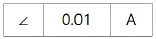
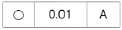
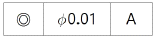
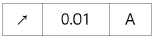
(정답률: 62%)
22. 다음 그림과 같은 입체도에서 화살표 방향의 투상도가 정면도일 경우 평면도로 가장 적합한 것은?
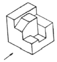
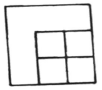
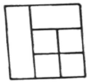
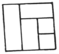
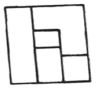
(정답률: 87%)
23. 파단선에 대한 설명으로 옳은 것은?
- 기술, 기호 등을 나타내기 위하여 끌어낸 선이다.
- 반복하여 도형의 피치를 잡는 기준이 되는 선이다.
- 대상물이 보이지 않는 부분의 형태를 나타낸 선이다.
- 대상물의 일부분을 가상으로 제외했을 경우의 경계를 나타내는 선이다.
(정답률: 71%)
24. 다음 중 치수를 기입할 공간이 부족하여 인출선을 이용하는 방법으로 가장 올바르게 나타낸 것은?
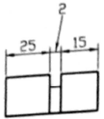
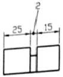
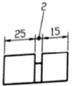
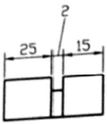
(정답률: 62%)
25. 구멍에 끼워 맞추기 위한 구멍, 볼트, 리벳의 기호 표시에서 구멍 가까운 면에 카운터 싱크가 있고, 공장에서 드릴 가공, 현장에서 끼워 맞춤에 해당하는 것은?
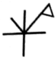
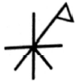
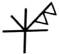
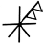
(정답률: 71%)
26. 일반 구조용 압연 강새의 재료기호가 SS 235일 경우 “235”의 의미로 옳은 것은?
- 연신율이 23.5% 이상이다.
- 평균 탄소함유량은 2.35%이다.
- 최저항복강도가 235N/mm2
- 최저탄성한고가 235N/mm2
(정답률: 69%)
27. 끼워 맞춤 공차 ø50H7/g6에 대한 설명으로 틀린 것은?
- 중간 끼워 맞춤의 형태이다.
- 구멍 기준식 끼워 맞춤이다.
- 축과 구멍의 호칭 치수는 모두 ø50이다.
- ø50H7의 구멍과 ø50 g6축의 끼워 맞춤이다.
(정답률: 71%)
28. 볼트 부품을 제도할 때 수나사의 완전 나사부와 불완전 나사부의 경계선을 나타내는 선은?
- 가는 실선
- 굵은 실선
- 가는 1점 쇄선
- 굵은 1점 쇄선
(정답률: 63%)
29. 자동조심 볼 베어링의 베어링계열 기호로만 짝지어진 것은?
- 60, 62, 63
- 70, 72, 73
- 12, 22, 23
- 511, 522
(정답률: 62%)
30. KS기하공차 도시방법 중 ⓟ로 표시되는 기호가 의미하는 것은?
- 돌출 공차역을 표시하는 기호
- 비례하지 않는 치수를 표시하는 기호
- 데이텀을 직접 도시하는 경우 사용하는 기호
- 공차붙이 형체를 직접 도시하는 경우 사용하는 기호
(정답률: 53%)
31. 스프링의 기능이 아닌 것은?
- 에너지의 축적
- 응력집중 완화
- 하중의 측정 및 조정
- 진동완화와 충격에너지 흡수
(정답률: 61%)
32. 다음 설명에 해당하는 법칙은?
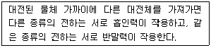
- 줄의 법칙
- 쿨롱의 법칙
- 플레미의 왼손 법칙
- 플레밍의 오른손 법칙
(정답률: 78%)
33. 직경 2cm이고 무게가 30kgf 둥근 봉을 테이블 위에 올려놓았다. 테이블이 받는 압력(kgf/cm2)은 약 얼마인가?
- 5.5
- 7.5
- 9.5
- 19.5
(정답률: 64%)
34. 하중의 크기와 방향이 주기적으로 변화하는 하중은?
- 교번하중
- 반복하중
- 이동하중
- 충격하중
(정답률: 78%)
35. 10C의 전하 Q가 임의의 A지점에서 B지점으로 이동하면서 40J의 일을 하였다면 두 지점 사이의 전위차(V)는 얼마인가?
- 0.25
- 4
- 40
- 400
(정답률: 76%)
36. 어떤 전기회로에 직류 110V의 전압을 가했더니 11A의 전류가 흘럿다면, 이 때의 저항값(Ω)은 얼마인가?
- 1
- 10
- 100
- 1000
(정답률: 90%)
37. 어떤 물체가 v1인 속도로 A점을 지나 v2인 속도로 B점을 지날 때 시간 t가 소요되었다면 가속도는?
- v1t
- v2t
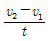
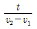
(정답률: 85%)
38. 그림에서 B점에 발생하는 힘(반력) R은 얼마인가?
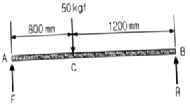
- 10kgf
- 20kgf
- 30kgf
- 50kgf
(정답률: 68%)
39. 회전축의 회전수 N(rpm), 전동마력 H(PS), 비틀림모멘트 T(kgf·cm)의 관계식이 옳은 것은?
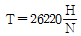
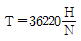
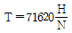
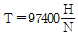
(정답률: 66%)
40. 물체의 형태나 크기가 달라지지 않는한 그 물체의 무게가 달라진다고 볼 수 없는데 이와 같이 변치 않는 물체 고유의 무게는?
- 속도
- 중력
- 질량
- 가속도
(정답률: 83%)
3과목: 자동제어
41. 제어대상의 현재 출력값과 미래 출력의 예상값을 이용하여 제어하며, 응답 속응성의 개선에 사용되는 동작으로 옳은 것은?
- 미분 동작
- 적분 동작
- 비례 미분 동작
- 비례 적분 동작
(정답률: 64%)
42. 그림과 같은 파형의 라플라스 변환으로 옳은 것은?
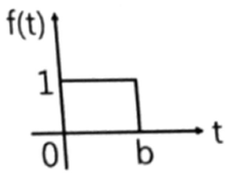
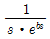
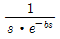
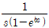
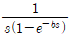
(정답률: 47%)
43. 시퀀스제어와 비교한 PLC제어의 특징으로 틀린 것은?
- 제어방식은 소프트 로직방식이다.
- 시스템 특징이 독립된 제어장치이다.
- 소형화가 가능하여 시스템 확장이 용이하다.
- 프로그램 변경만으로 제어내용의 변경이 가능하다.
(정답률: 66%)
44. 데이터를 1개의 케이블을 통해 1bit씩 전송하는 방식으로 전송속도는 느리나 설치비용이 저렴한 데이터 전송 방식은?
- 병렬전송방식
- 직렬전송방식
- 반이중전송방식
- 전이중전송방식
(정답률: 77%)
45. PLC에서 스캔타임(scan time)의 의미로 옳은 것은?
- PLC 입력 모듈에서 1개 신호가 입력되는 시간
- PLC 출력 모듈에서 1개 신호가 입력되는 시간
- PLC에 의해 제어되는 시스템의 1회 실행시간
- PLC에 입력되는 프로그램을 1회 연산하는 시간
(정답률: 63%)
46. 공작물 수치제어 좌표계에서 절대위치 결정방법에 대한 설명으로 옳은 것은?
- 공구의 위치를 항상 원점(영점)을 기준으로 표시
- 공구의 위치를 항상 앞의 공구위치를 기준으로 표시
- 공구의 위치를 원점(영점)과 앞의 공구위치를 기준으로 표시
- 공구의 위치를 X, Y축선 상에서 어느 한 점을 기준으로 표시
(정답률: 79%)
47. C언어의 반복제어문에 해당되지 않는 것은?
- for 문
- while 문
- do-while 문
- switch-case 문
(정답률: 79%)
48. 보드선도에서 –3dB 점이란 기준 크기의 얼마인가?
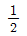
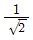
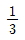
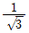
(정답률: 54%)
49. 속도를 전압으로 변환하는 센서는?
- 포텐쇼미터
- 초음파 센서
- 광 트랜지스터
- 태코제너레이터
(정답률: 72%)
50. 유압 시스템에서 유압유를 선택할 때 요구조건으로 틀린 것은?
- 화재의 위험이 없을 것
- 녹이나 부식 발생이 없을 것
- 수분을 쉽게 분리시킬 수 있을 것
- 동력을 전달하기 위해 압축성일 것
(정답률: 74%)
51. 라플라스 변환에서 t함수와 s함수 관계가 옳은 것은? (단, t함수의 초기조건은 모두 0으로 가정한다.)
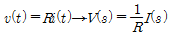
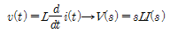
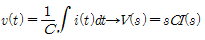
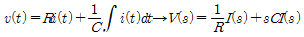
(정답률: 55%)
52. 개루프제어시스템과 비교한 폐루프제어 시스템의 특징으로 틀린 것은?
- 제어오차가 감소한다.
- 필요한 센서의 개수가 증가한다.
- 제어시스템의 가격이 저렴해진다.
- 제어시스템의 구성이 복잡해진다.
(정답률: 83%)
53. 다음 서보기구 중 구조가 복잡하나 출력이 클 때 유리한 서보기구는?
- 교류 서보기구
- 직류 서보기구
- 클러치 서보기구
- 포지셔너 서보기구
(정답률: 56%)
54. PLC의 통신 중 RS-422방식에 대한 설명으로 틀린 것은?
- 1byte 단위로 data가 전송된다.
- 전송속도가 느리나 소프트웨어가 간단하다.
- 데이터를 1개의 케이블을 통해 1bit씩 전송된다.
- RS-232C에 비해 전송길이가 길고 1:N접속이 가능하다.
(정답률: 60%)
55. 제어요소의 입·출력 변수의 관계를 수식적으로 표현한 전달함수의 특성으로 틀린 것은?
- 제어계의 입력과는 관계없다.
- 비선형 제어계에서만 정의된다.
- 임펄스 응답의 라플라스 변환으로 정의된다.
- 제어계 입·출력 함수의 라플라스 변환에 대한 비가 된다.
(정답률: 56%)
56. 제어계의 출력이 목표 값과 일치하는가를 비교하여 일치하지 않은 경우 그 차이에 따라 정정신호를 제어계에 보내는 제어방식은?
- 개루프 제어
- 되먹임 제어
- 시퀀스 제어
- 프로그램 제어
(정답률: 82%)
57. 실린더 양측의 수압 면적이 같아 전·후진할 때 출력속도가 동일한 실린더는?
- 단동 실린더
- 탠덤 실린더
- 다위치 실린더
- 양로드 실린더
(정답률: 79%)
58. 다음 전달함수의 값으로 옳은 것은?
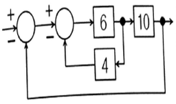
- 0.6
- 0.7
- 0.8
- 0.9
(정답률: 50%)
59. 다음 그림은 계의 입·출력 관계를 나타내는 블록선도이다. 여기서 전달함수 G1=2, G2=3일 때 계 전체의 전달함수는?
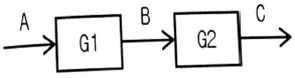
- 3
- 6
- 9
- 12
(정답률: 82%)
60. 냉동식 오일 쿨러의 특징으로 틀린 것은?
- 환기설비가 필요하다.
- 냉각수가 필요하지 않다.
- 자동 유온 조정이 적합하다.
- 운반이 용이하며 대기 온도나 물의 온도 이하의 냉각이 용이하다.
(정답률: 57%)
4과목: 메카트로닉스
61. 불 대수의 기본 법칙으로 옳은 것은?
- A + 0 = 0
- A + 1 = 1
- A · 1 = 0
- A · 1 = 1
(정답률: 70%)
62. 아날로그 출력 전압 범위가 0~7V인 3비트의 D/A 변환기의 입력으로 2진 값 100이 입력된다면 아날로그 출력 전압은 몇 V인가?
- 2
- 3
- 4
- 7
(정답률: 54%)
63. 자속밀도와 자기력 사이의 관계를 나타 낸 곡선은?
- 전력 곡선
- B-H 곡선
- 항자력 곡선
- 부하특성 곡선
(정답률: 71%)
64. 십진수 19를 BCD코드로 변환한 결과로 옳은 것은?
- 0001 0011
- 0110 1100
- 0001 1001
- 0010 1100
(정답률: 71%)
65. 마이크로 컴퓨터의 메모리 중 RAM에 대한 설명으로 틀린 것은?
- 데이터의 내용 변경이 가능하다.
- 전원이 차단되어도 그 내용에는 전혀 변화가 없다.
- 전원이 차단되는 순간 저장되어 있는 데이터는 모두 없어진다.
- 임의의 데이터를 저장하기도 하고, 외부에서 데이터를 로딩할 수 도 있다.
(정답률: 70%)
66. 마이크로프로세서는 전형적으로 4비트, 8비트, 16비트로 구분하는데 이 비트가 의미하는 것은?
- 기억소자
- 정보의 단위
- CPU의 종류
- 레지스터의 크기
(정답률: 77%)
67. 기계제작에 이용되는 성질 중 절삭가공에 이용되는 성질은?
- 가용성(fusibility)
- 전연성(malleability)
- 접합성(weldability)
- 연삭성(grindability)
(정답률: 83%)
68. 열전대의 특징이 아닌 것은?
- 고온 측정에 사용된다.
- 온도 측정 범위가 넓다.
- 부착 방법에 따라 오차가 발생한다.
- 형상이나 치수에 의해 영향을 받는다.
(정답률: 60%)
69. 일반적으로 브러시 교환이 필요한 서보모터는?
- 스테핑 모터
- DC 서보 모터
- 동기형 AC 서보 모터
- 유도기형 AC 서보 모터
(정답률: 69%)
70. 비트 마스트(bit mask)와 비트 리셋(bit reset)용도로 사용되는 연산자는?
- 부정(NOT)
- 논리합(OR)
- 논리곱(AND)
- 배타적 논리합(XOR)
(정답률: 55%)
71. 전지적으로 절연되어 있지만 광을 매개체로 하여 신호전달이 가능하고 광학적으로 결합되어 있는 발광부와 수광부를 갖추고 있는 센서는?
- 리드 스위치
- 포토 커플러
- 유도형 근접 센서
- 용량형 근접 센서
(정답률: 79%)
72. 머시닝 센터(Machining Center)에 대한 설명으로 틀린 것은?
- 드릴작업을 할 수 있다.
- 방전을 이용한 가공작업이다.
- 자동공구교환장치(ATC)가 있다.
- 테이블은 가공물을 절삭에 필요한 위치까지 이동시킨다.
(정답률: 70%)
73. 다음 불 논리식을 간략화한 결과로 옳은 것은?
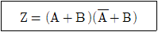
- Z = B
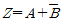
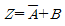
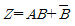
(정답률: 64%)
74. AC 서보모터의 특징으로 옳은 것은?
- 정류에 한계가 있다.
- 회전 검출기가 필요하다.
- 보러시의 유지보수가 필요하다.
- 고정자가 권선으로 방열이 쉽다.
(정답률: 43%)
75. 우리나라 전원의 상용 주파수인 60Hz에 대한 각속도[rad/sec]는?
- 77
- 177
- 277
- 377
(정답률: 57%)
76. TTL IC의 출력으로 사용되지 않는 방식은?
- 3상(3-states) 출력
- 토템폴(totem pole) 출력
- 사이리스터(thyristor) 출력
- 오픈컬렉터(open collector) 출력
(정답률: 58%)
77. 기계를 제작할 때 고려해야 할 사항으로 틀린 것은?
- 효율이 좋고, 유지비가 적을 것
- 디자인이 좋고, 상품 가치가 높을 것
- 각 부품은 자유운동을 할 수 있을 것
- 기계 각 부의 강도는 신뢰성이 있을 것
(정답률: 62%)
78. 센서의 검출 면에 전자유도 작용으로 금속체의 유·무를 판별하는 비접촉식 검출 센서는?
- 포토센서
- 리밋 스위치
- 용량형 근접센서
- 유도형 근접센서
(정답률: 77%)
79. 전력을 구하는 식으로 틀린 것은? (단, P: 전력, I: 전류, V: 전압, R: 저항이다.)(오류 신고가 접수된 문제입니다. 반드시 정답과 해설을 확인하시기 바랍니다.)
- P = I × V
- P = V × R
- P = I2 × V
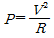
(정답률: 51%)
80. 저항을 연결하는 방법에 대한 설명으로 틀린 것은?
- 저항을 직렬 연결하면 총 저항값은 가장 큰 저항보다 더 커진다.
- 저항을 병렬 연결하면 총 저항값은 가장 작은 저항보다 더 작아진다.
- 동일한 저항을 직렬로 연결할 때 저항의 수량과 한 개의 저항값을 곱하면 총 저항값이 된다.
- 동일한 저항을 병렬로 연결할 때 저항의 수량과 한 개의 저항값을 더하면 총 저항값이 된다.
(정답률: 68%)